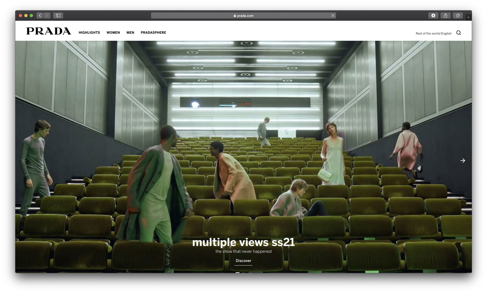
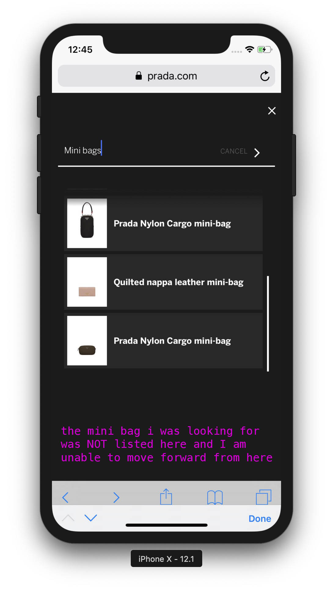
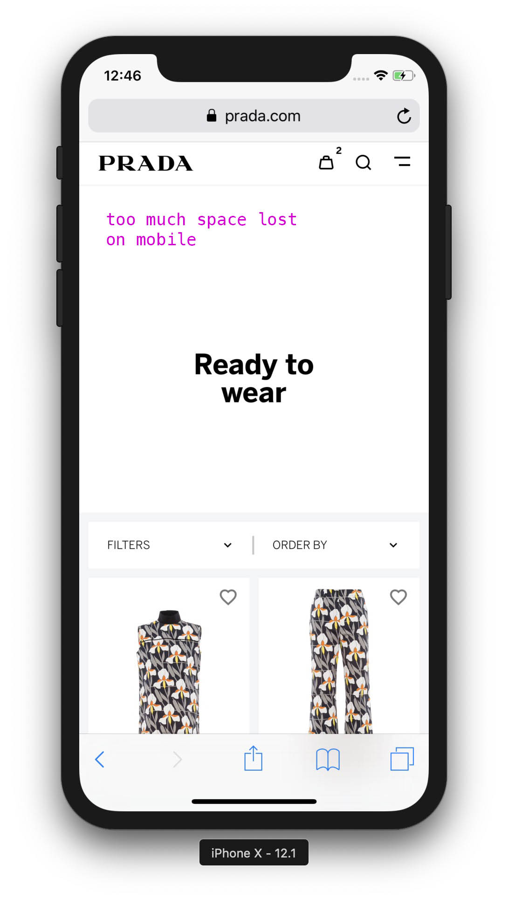
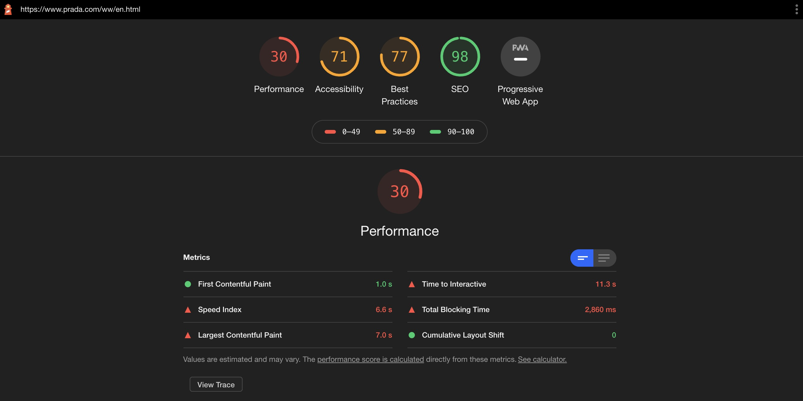

Blog posts
fashionweb review: PRADA.com
prada.com: a baby website for a century old luxury brand
Our website review series will commence with Prada.com. The Italian fashion house has been amongst the big brands who have been lagging behind with their digital transformation: they started selling on Net-A-Porter/Mr Porter in 2016, and they only entered e-commerce in China at the end of 2017. They are waking up to the realisation that people want to shop online.
A six-year-long awakening
When Prada’s CEO Patrizio Bertelli was asked in 2014 ‘why not e-commerce’, he responded that he has “more important things to do, like opening stores, for example.” It took the 74-year-old CEO two years before he admitted in a strange way in 2016 that “E-commerce was very American and now it’s moving also to Europe and very strongly in China.”
Three more years pass and in March 2019, Prada reported a 17.6 percent decline in net profits and posted a 10 percent fall in operating profit of €324M. Perhaps Patrizio Bertelli has been finally enlightened by now that shopping online is not something only Americans like doing and hopefully he understands the importance of expanding into e-commerce.
It seems like over these years he got the memo, since Prada has redesigned their website at the end of 2019 and promised to roll out their new e-commerce platform to more markets by 2020. Let’s dig deeper into their website here on fashionweb.io
Web Design:
➕ Sleek luxury feel, the usual white/grey/black color palette is being used, just like 99% of all other luxury e-commerce brands. *yawn*? Not exactly. No revolutionary design, but that is completely fine - it’s ok to put more creativity into campaigns and products which are accurately displayed on the website.
UX/UI:
➖ Mobile navigation feels too slow and sometimes flickering. You have to tap and make multiple selections in order to view a product. For example when I wanted to check their new mini bags, it took me 4 taps to get there where the mobile navigation was slow to respond to my taps. Feels like my time is being wasted as I am tapping many times to finally look at what I was looking for.
➖ When I searched for “mini bags”, I didn’t get the mini bag that I was looking for listed as a search result. Again, my time is being wasted and I might not buy this bag if I am in a hurry.

➖ A lot of space is lost on mobile on certain Categories pages [Product Listing Pages, like Bags].

Product photography:
➕ High quality product images, it’s clear to see what I am buying.
➖ Product photography could be improved and be more creative that communicates the Prada brand.
➖ Certain pages on mobile have too low-res images which was overlooked by the luxury brand. Most people who shop for luxury items have the best and most expensive devices with high-res displays. A low-res image makes everything look cheap.
Speed
➖ Perceived loading time feels ok. When looking at Lighthouse tests, there is a lot to improve in their javascript stack as it’s slowing down the site considerably. Friendly reminder: Speed if important and it has a large, measurable effect on conversion rates. In fact it is so important that it will deserve a specific fashionweb.io article.
➖ Long and ugly URLs that impact SEO negatively. They need to use canonicalisation. https://www.prada.com/gb/en/men/shoes/sneakers/products.prax_01_leather_and_technical_fabric_slip-on_sneakers.4D3480_3KYU_F0002_F_G000.html
Checkout
➕ Kudos for having a single page checkout, a customer can have a quick glance at the entire checkout, not having to go through them step-by-step.
➖ Unable to preview the Payment methods in the Checkout... Why not? 🤔
REVIEW TIME
LOOK AND FEEL: 👜👜👜 [3 out of 5 handbags]
Nothing revolutionary, actually it's even boring but that’s fine. They are following best practices most of the time. Usual black/white/grey colour palette is used, just like all the other fashion brands.
WEB PERFORMANCE: 👜👜 [2 out of 5 handbags]
We know you are late but it is not an excuse. Catch up faster! Advice: good to look at webspeed stats and work on those numbers. Your conversion will thank you for it.
FASHIONWEB.IO's ARBITRARY FEELING: 👜👜👜👜 [4 out of 5 handbags]
We are seeing a good trend from PRADA.com and it has to be rewarded. We will judge here how brands move forward with e-commerce, and not only their current state. So we encourage this baby website that PRADA has produced as
they have finally realised how important their e-commerce is and investing more into this precious field. Well done, keep going! Or else you will be quickly left behind... again...
Date: 2020. july 21.